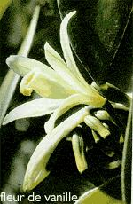

En Janvier, c’est l’été. An 2000. C’est l’été mais même si je vous parle de saisons je ne vous parlerais pas du temps qu’il fait. Le nouveau siècle est l’occasion pour beaucoup de réécrire le histoire, ne remarquez-vous pas autour de vous, les pubs, la mode, les images dans les tons pastels, presque transparents ? Comme si pour ce nouveau siècle on nous donnait page presque blanche, on nous laissait le soin de réécrire nos vies…
 Je vais moi aussi réécrire les lois de ce site et vous présenter un site non Réunionnais. Il s’agit du site web d’un importateur de vanille qui évidement importe aussi de la vanille de la Réunion. L’île est la terre d’origine de la Vanille Bourbon dont elle a repris le nom. C’est aussi le berceau de la production de vanille cultivée. En effet, c’est à la Réunion qu’a été découvert le principe de fécondation manuel de la vanille permettant de récolter les gousses en dehors du Mexique, pays d’origine de cette orchidée. Cette découverte est due à un jeune garçon, Edmond Albius, dont l’histoire vaut le détour. Aujourd’hui la plus grande quantité mondiale de cette vanille Bourbon, cette «meilleure vanille du monde» est produite à Madagascar, la grande île voisine, mais on continue de cultiver cette célèbre orchidée au Nord-Est de l’île, dans les environs de Saint-Philippe. Saint-Philippe est au vent, là où le climat est assez humide pour favoriser la croissance des orchidées. Ce site d’eurovanille vous raconte l’histoire de la vanille et vous en décrit toutes les variétés. Il détaille la culture de la fleur à la gousse et vous explique les méthodes de préparation. Cet exotique détour en métropole valait bien la peine.